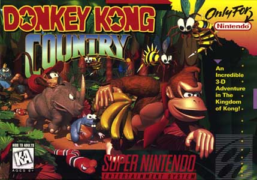
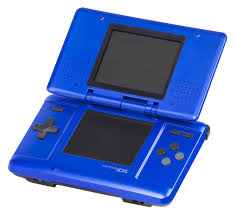

Double Special Anniversary
11/21/2014
Today is the anniversary of two revolutionary items related to video games. First is the 20th anniversary of an SNES game made by the company Rare, and the second is a 10th anniversary of a handheld system. So without further ado, happy birthday to:
Donkey Kong Country 
This video game is what brought the Donkey Kong series into the 90's. After a trio of arcade games starring DK in the 80's, the character began to lose popularity. Thus, the British company Rare created Donkey Kong Country a beautiful 2d platformer starring Donkey Kong the Third and his nephew, Diddy Kong. Since, the game has started a popular series, the next two made by Rare and the more modern ones made by Retro. Though the series has been going for two decades now, all the entries showcase high quality graphics and gameplay.
The DS
This revolutionary handheld, introduced as the "dual screen" or "developer's system", was not only the first handheld with two screens, but also the first with a touch screen. The DS then spawned a full family of systems: the slimmer DS lite is much more attractive then the original "fat" model, the DSi included a camera, music player, and the first ever Nintendo digital shop, the DSi shop, and the DSi XL had 50% larger screens for those willing to pay a little extra. The DS also had a massive game library including games from the Kirby, Mario and Luigi, and Metroid Prime series, while also bringing the Super Mario Bros. series into the 21st century with New Super Mario Bros. . Overall, the DS family has sold over 154 million units making it the best selling handheld in history.
